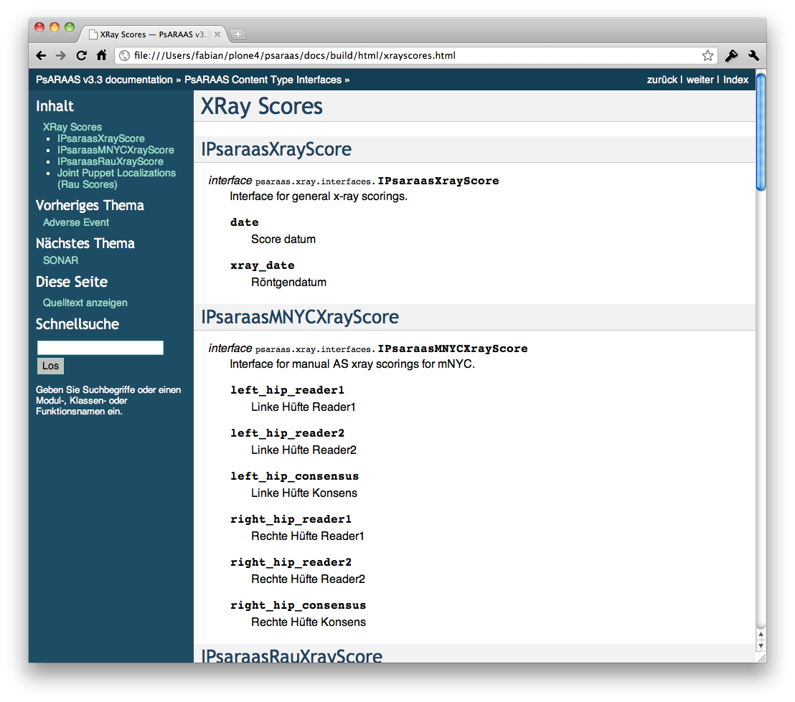

Blog
HTML5 Web App
Interessant ist schon mal die Bezeichung "App" welche man bei der Financial Times gewählt hat (http://app.ft.com). Offenbar kommt man um das Buzzword "App" nicht mehr herum.
Zweitens fällt ins Auge, wie aktiv komumniziert wird, wie der Besucher, die Seite zu seinem Home Screen hinzufügen kann.

Ich hatte auch schon die Vermutung, dass nach einer App schreiende Kunden im Prinzip nichts anderes wollen, als ein schönes Icon auf dem Home Screen. Eine App ist in diesem Fall dann nicht viel mehr als ein Bookmark auf eine Website.
Die FT erläutert sehr gelungen, warum sie sich gegen eine native App entschieden hat:
Why did the FT decide to create an HTML5 web app?
Creating an HTML5 app is innovative and breaks new ground – the FT is the first major news publisher to launch an app of this type. There are clear benefits. Firstly, the HTML5 FT Web App means users can see new changes and features immediately. There is no extended release process through an app store and users are always on the latest version.Secondly, developing multiple ‘native’ apps for various products is logistically and financially unmanageable. By having one core codebase, we can roll the FT app onto multiple platforms at once.
We believe that in many cases, native apps are simply a bridging solution while web technologies catch up and are able to provide the rich user experience demanded on new platforms. As these improve we expect to see more HTML5 apps and fewer native apps, but there is always likely to be a market for native apps for specific brands or when deeper integration with the hardware or super fast performance are required (games are the most obvious example).
Ein wichtiger Grund dürften aber sicherlicher die strengen Richlinien im App Store von Apple sein, welche die Verlage zwingen ihre Abos über die In-App- Schnittstelle zu vertreiben. Dabei verlieren die Verlage nicht nur den direkten Kontakt zu ihren Abonnenten sondern geben satte 30% an Apple ab.
Die native App is tot! Lange lebe die HTML5 Web App
Die native App ist tot! Lang lebe die HTML5 Web Cloud App (womit wir gleich drei inhaltlich sehr unscharfe Buzzword aneinander gereiht haben.)!
OCQMS - Prototype
OCQMS gibt es in einem ersten Prototypen, inklusive graphischer Oberfläche. In den nächsten Wochen werden wir intensiv an der Applikation weiterarbeiten, so dass bald eine erste Version in der Praxis getestet werden kann.

OCQM - Open Clinical Quality Management
Die wertvollen Erfahrungen, die wir im Rahmen der nationalen Rheumadatenbank
in der Schweiz und deren
Schwesterdatenbank in Dänemark gesammelt haben, werden wir in ein neues
Projekt für die medizische Forschung einbringen.
Das Projekt ist noch in einem sehr frühen Stadium, wird jedoch über die
nächsten Monate wachsen und dann auch versuchsweise in einem
Universitätsspital eingesetzt werden.
OCQMS wird ein Clinical Quality Management System, welches rasch um Krankheiten erweitert und in weiteren Ländern eingesetzt werden kann.
Ein erster Entwurf des Datenmodells
Data Dictionary mit Sphinx

Die SCQM-Rheumadatenbank umfasst hunderte von Fragen und damit Datenbankfelder. Um den Überblick über alle Felder sowie deren Bezeichnungen, Werte und Enumerationen zu behalten, erstellen wir die Dokumentation aller Felder mit Sphinx.
Sphinx gereneriert den Data Dictionary automatisch aus den Interfaces im Code. So stellen wir sicher, dass die Dokumentation auch bei Weiterentwicklungen stets up-to-date bleibt.

Die Dokumentation wird bei jedem Release online veröffentlich, so dass Forschende einfach Zugriff auf diese Informationen haben: http://docs.scqm.ch
Connecting to MSSQL with pyodbc
First, you need to install some packages.
$ sudo aptitude install unixodbc unixodbc-dev freetds-dev sqsh tdsodbc
With FreeTDS installed configure it like this:
/etc/freetds/freetds.conf
[myServer]
# host configuration is in /etc/odbcinst.ini
tds version = 7.0
Testing FreeTDS is not too hard:
$ sqsh -S myServer -U USERNAME -P PASSWORD
Next up it’s necessary to configure ODBC:
/etc/odbcinst.ini
[FreeTDS]
Description = TDS driver (Sybase/MS SQL)
Driver = /usr/lib/odbc/libtdsodbc.so
Setup = /usr/lib/odbc/libtdsS.so
CPTimeout =
CPReuse =
FileUsage = 1
/etc/odbc.ini
[myServer]
Driver = FreeTDS
Description = ODBC connection via FreeTDS
Trace = No
Servername = myServer
Database = DATABASENAME
Now you want to install pyodbc
$ easy_install pyodbc
and use it in python:
import pyodbc
cnxn = pyodbc.connect('DSN=myServer;UID=USERNAME;PWD=PASSWORD')
See: http://lambie.org/2008/02/28/connecting-to-an-mssql-database-from-ruby- on-ubuntu/